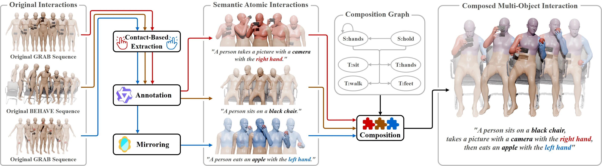
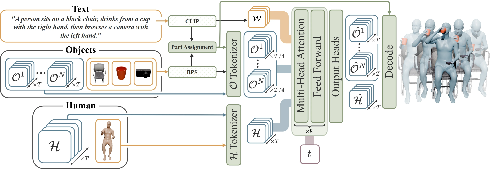
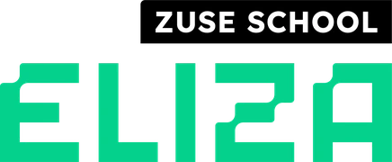
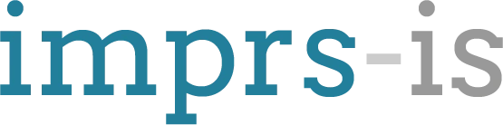

Any number of objects
Weight-shared object slots: one model generates one to five objects.
1University of Tübingen 2Tübingen AI Center 3Zuse School ELIZA 4Max Planck Institute for Informatics
*Equal contribution
TL;DR Interactions are local, so we compose multi-object interactions from single-object captures and train one diffusion model that generates interactions with one to five objects.
Abstract
Generative models of human-object interaction are bounded by the data that exists: everyday activities involve several objects, but most captured datasets record one at a time, as multi-object capture is combinatorially expensive. Our observation is that interactions are local, so single-object captures already contain the parts of multi-object activities.
We compose them: contact-consistent clips of single interactions, mirrored to balance the hands, transfer between bodies, and a language model and geometric checks admit only the pairings that are plausible, semantically and physically. Therefore, the dataset grows combinatorially with the clips rather than recording time. The COSMI dataset holds 222k sequences and 275 hours with up to five objects, nearly thirty times the largest multi-object capture, and can be extended by adding datasets or even hand-object recordings.
On this data we train the COSMI method, a text-to-interaction diffusion transformer that follows how the data is built: weight-shared object slots generate a variable number of objects, predicted relative to the body parts that move them. On a benchmark with an unseen object and unseen interaction combinations, models trained on the dataset generalize to the unseen combinations. COSMI outperforms baselines in text alignment and contact accuracy, where its margin is largest on the unseen object.
Main Idea
Most interactions use only part of the body. Sitting on a stool uses the pelvis, and drinking from a bottle uses the right hand. We cut captured motion into such atomic interactions, one action per clip. Mirroring moves a right-hand phone call to the left hand. Composed on one body, the three clips form a new sequence: the person sits, calls with the left hand, then drinks with the right.
Dataset
We start from existing single-object sequences. Contact-based extraction cuts them into atomic clips, each containing a single interaction. A language model annotates each clip. Captures favour the right hand, so mirroring creates the missing left-hand clips. Finally, the composition graph combines the clips into a composed multi-object sequence.

Method
COSMI generates a person and one to five objects from a text prompt with a single diffusion transformer. The transformer denoises human tokens, one per frame, and object tokens, one per four frames, at diffusion step t. The text tokens of the prompt, the initial poses, and the name and geometry of every object condition the generation. Finally, the model places each object relative to the body joint that drives it.

Weight-shared object slots: one model generates one to five objects.
Each object moves with its driving joint, like a cup with the wrist.
Per-word CLIP tokens let attention link each object to its words.
Contact guidance closes fingers on objects and stops feet from sliding.
COSMI generations for test prompts with up to five objects.
We compare COSMI with HIMO and with multi-object versions of PriorMDM and MDM, all trained on the COSMI dataset. HIMO trains one model per object count, so it appears in the three-object tier only. The black chair is the unseen object of our benchmark: no training sequence contains it.
Extensibility
Nothing in the composition is tied to a specific dataset. New objects, other datasets, and future captures enter through the same interaction rules. So do partial observations, such as hand-only recordings. A HOT3D recording, for example, captures only the hands and the object. Once we fit SMPL-X to the headset and the MANO hands, it becomes a full-body clip. The composition then combines it with other clips like any captured source.
Special thanks to Riccardo Marin and Nikita Kister for the helpful discussions. We thank Margaret Kostyrko and Yuxuan Xue for sharing the SMPL-X registrations that were used for the visualizations. This work is funded by the Deutsche Forschungsgemeinschaft – 409792180 (Emmy Noether Programme, project: Real Virtual Humans). Daniel Eskandar is supported by the Konrad Zuse School of Excellence in Learning and Intelligent Systems (ELIZA) through the DAAD programme Konrad Zuse School of Excellence in Artificial Intelligence, sponsored by the Federal Ministry of Education and Research. The authors thank the International Max Planck Research School for Intelligent Systems (IMPRS-IS) for supporting I. A. Petrov. G. Pons-Moll is a member of the Machine Learning Cluster of Excellence, EXC number 2064/1 – Project number 390727645. The project was made possible by funding from the Carl Zeiss Foundation.


Citation
@article{eskandar2026cosmi,
author = {Eskandar, Daniel and Petrov, Ilya A. and Pons-Moll, Gerard},
title = {COSMI: Compositional Synthesis of Multi-Object Interactions},
journal = {arXiv preprint arXiv:2610.03252},
year = {2026}
}